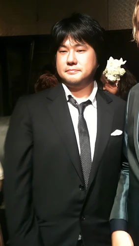

Eiichiro Oda

Feche de nacimiento: 1 de enero de 1975
Edad: 48 años
Afiliaciones: Shonen Jump
Ocupacion: Mangaka
Recidencia: Japon
Estado: Vivo
Eiichiro Oda (尾田栄一郎 Oda Eiichirō?), nacido el 1 de enero de 1975
en la prefectura de Kumamoto es un mangaka japonés, conocido por ser
el creador del manga One Piece.
Dado el gran éxito que One Piece ha cosechado es el creador de manga
que más dinero ha ganado así como el que más copias ha vendido y es
considerado, junto a Akira Toriyama, uno de los dibujantes más
influyentes de la historia de Japón.
Eiichiro Oda está casado con Chiaki Inaba (稲葉ちあき, Inaba Chiaki),
ex modelo, actriz, "Campaign Girl", "Race Queen" y "Gravure Idol"
desde el 7 de noviembre de 2004 y juntos han tenido dos hijas; la
mayor nació en 2006 y la menor en 2009.
One Piece (1997-Actualidad):
Finalmente, en agosto de 1997, creó su obra característica, One Piece. Después de haber sido inspirado por los piratas, hizo One Piece una serie de piratas.
Debido a su intenso trabajo de rutina, Oda duerme solo tres horas por noche, según cuenta el mismo. Además, vive separado de su esposa e hijas, las cuales lo visitan una vez por semana en su lugar de trabajo. Oda visita el hogar familiar en vacaciones; una lujosa mansión ubicada en el barrio de Nerima, Tokio. En una entrevista a Oda en 2019, se supo que tras casarse en 2004, le prometió a su esposa que al finalizar el manga de One Piece, se irían de viaje por el mundo. Ya que, según el, había dicho que lo acabaría en diez años.
Futuro:
Oda ha declarado en una entrevista que después de terminar One Piece no haría ningún otro manga tan largo, ya que duda mucho que alcance la fama de One Piece, y solo hará historias cortas.
Obras:
- WANTED! (one-shot) (1992)
- El regalo de Dios para el futuro (1993)
- Ikki Yako (1994)
- MONSTERS (1994)
- Romance Dawn V.1 (1996)
- Romance Dawn V.2 (1996)
- One Piece (1997-Actualmente)
- Cross Epoch (2006, junto a Akira Toriyama)
- One Piece x Toriko (2011, junto a Mitsutoshi Shimabukuro)